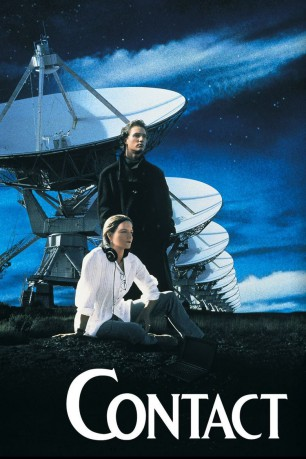
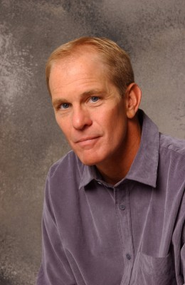
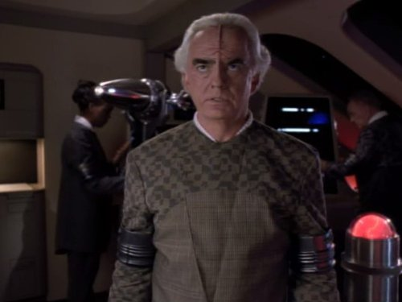
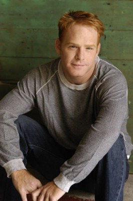

#5133 Contact
Auszeichnungen: für 1 Oscars nominiert
 
 IMDB-Wertung: 7.4 / 10
IMDB-Wertung: 7.4 / 10  Tomatometer: 63
Tomatometer: 63  Metascore: 0
Metascore: 0 
Die Wissenschaftlerin Ellie Arroway ist besessen von der Idee, die Existenz außerirdischer Intelligenz zu beweisen. Eines Tages gelingt es ihr tatsächlich, eine Nachricht aus dem All aufzuzeichnen. Eine fremde Lebensform macht ein verschlüsseltes Angebot zur Kontaktaufnahme! Unter weltweiter Beteiligung bereitet sich die Menschheit auf den aufregendsten Moment ihrer Geschichte vor.
Jahr: 1997
Dauer: 149 Minuten
FSK: 12
Land: USA Studio: Warner Bros.Tonspuren: DD5.1 - ,
Untertitel:
Auflösung: 1080p (1920x800) Größe: 9994 MB
Genre: Thriller, Drama, Sci-Fi, Mystery
Regisseur:  Robert Zemeckis
Robert Zemeckis
Drehbuch: Odile Barski
Soundtrack:
Darsteller:
 Jena Malone als Young Ellie
Jena Malone als Young Ellie David Morse als Ted Arroway
David Morse als Ted Arroway Jodie Foster als Eleanor Arroway
Jodie Foster als Eleanor Arroway Geoffrey Blake als Fisher
Geoffrey Blake als Fisher William Fichtner als Kent
William Fichtner als Kent Matthew McConaughey als Palmer Joss
Matthew McConaughey als Palmer Joss Tom Skerritt als David Drumlin
Tom Skerritt als David Drumlin- Henry Strozier als Minister
 Max Martini als Willie
Max Martini als Willie Larry King als Larry King
Larry King als Larry King- Dan Gifford als Jeremy Roth
 James Woods als Michael Kitz
James Woods als Michael Kitz- Vance Valencia als Senator Valencia
 Angela Bassett als Rachel Constantine
Angela Bassett als Rachel Constantine- Behrooz Afrakhan als Middle Eastern Anchor
- Saemi Nakamura als Japanese Anchor
- Maria Celeste Arraras als Latina Anchor
 Geraldo Rivera als Geraldo Rivera
Geraldo Rivera als Geraldo Rivera Jay Leno als Jay Leno
Jay Leno als Jay Leno- Robert D. Novak als Robert D. Novak
- Ann Druyan als Ann Druyan
 Rob Lowe als Richard Rank
Rob Lowe als Richard Rank Jake Busey als Joseph
Jake Busey als Joseph- Michael Albala als Decryption Hacker
 Leo Lee als Major Domo
Leo Lee als Major Domo John Hurt als S.R. Hadden
John Hurt als S.R. Hadden- David St. James als Joint Chief
- Haynes Brooke als Drumlin Aide
- Bryant Gumbel als Bryant Gumbel
-  Steven Ford als Major Russell
- Philippe Bergeron als French Committee Member
 Marc Macaulay als NASA Technician
Marc Macaulay als NASA Technician Tucker Smallwood als Mission Director
Tucker Smallwood als Mission Director- Jeffery Thomas Johnson als Mechnical
- Yuji Okumoto als Electrical
- Rob Elk als Pad Leader
- Alex Veadov als Russian Cosmonaut
-  Robin Gammell als Project Official
-  Kristoffer Ryan Winters als Dynamics #2
- William L. Thomas als Reporter #6
- Robert Aguilar Jr. als NASA Controller #2 , uncredited
- Neil Armstrong als Himself - Voice Through Space , archive sound, uncredited
- Mark Bailey als Four-Star General , uncredited
- Christopher Boyer als Scientist , uncredited
 Candice T. Cain als Supporter , uncredited
Candice T. Cain als Supporter , uncredited- Bill Clinton als Himself , archive footage, uncredited
- Derrick Damions als Ailing Believer , uncredited
- Elaina Erika Davis als Philanthropy Bureaucrat , uncredited
 Pamela Fischer als Pedestrian , uncredited
Pamela Fischer als Pedestrian , uncredited- Carl Gilliard als Controller , uncredited
Datei: X:\1997\Contact (1997, FSK12, 1920x800).mkv seit 23.12.2016
Festplatte: HD 1996-2002
 Es gibt insgesamt 83 Filme in der Gruppe '1997'
Es gibt insgesamt 83 Filme in der Gruppe '1997'